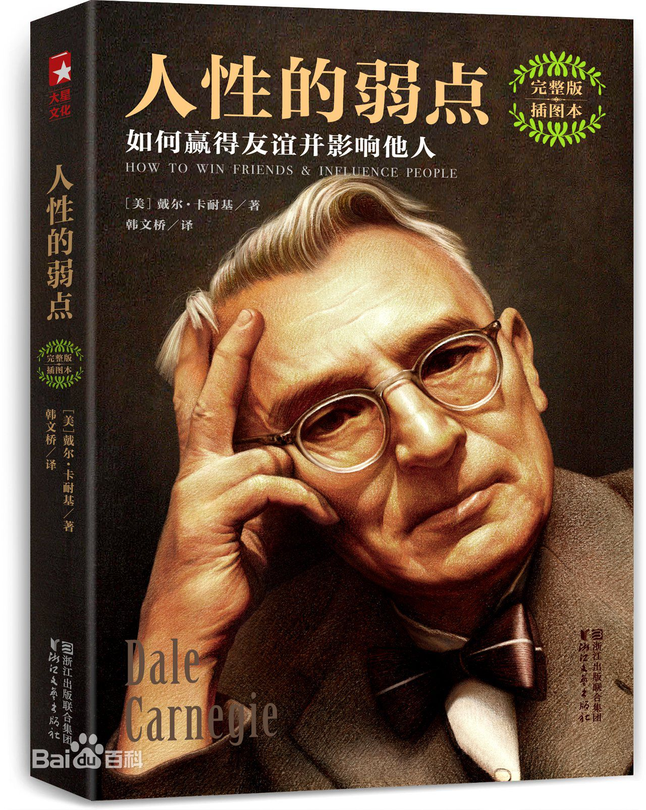
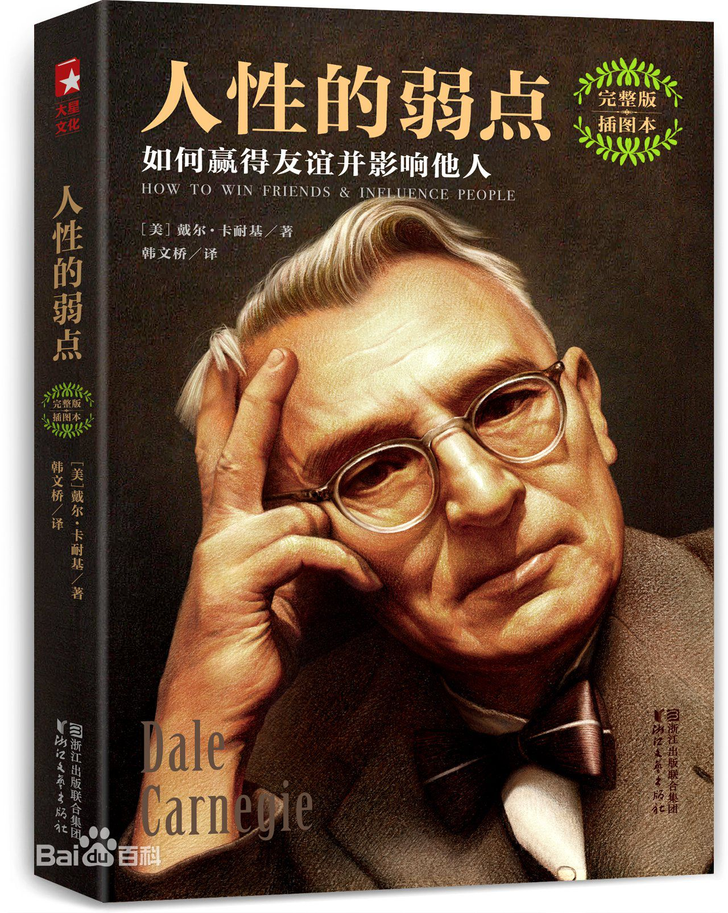

关于此网站
本网站致力于为每一个爱书人士推出能激励个人成长的好书！只有当一本书提供了精神成长、工作技能的提升，才会被我们所推荐！读书的益处:
1. 读书可以增加谈吐深度2.读书可以保持大脑的活跃
3.读书可以使人抵抗孤独
4.读书可以释放压力
5.读书使人明智
小组信息
学院：经贸学院班级：17电子商务B2班
小组：“高尔基”小组
作者简介：戴尔·卡耐基（Dale Carnegie，1888－1955年)，20世纪最伟大的心灵导师，美国人戴尔·卡耐基利用大量普通人不断努力取得成功的故事，通过演讲和书唤起无数陷入迷惘者的斗志,激励他们取得辉煌的成功。卡耐基在实践的基础上撰写而成的著作，是20世纪最畅销的成功励志经典。
该书汇集了卡耐基的思想精华和最激动人心的内容，是作者最成功的励志经典，出版后立即获得了广大读者的欢迎，成为西方世界最持久的人文畅销书。无数读者通过阅读和实践书中介绍的各种方法，不仅走出困境，有的还成为世人仰慕的杰出人士。只要不断研读本书，相信你也可以发掘自己的无穷潜力，创造辉煌的人生。
世界成功学第一书，戴尔·卡耐基成功学教育全书之一！世界上最畅销、最经典、最实用的为人处世参考书。“成人教育之父”戴尔·卡耐基的思想精华和最激动人心的内容，帮助你解决你所面临的最大问题：如何在你的日常生活、商务活动与社会交往中与人打交道，并有效地影响他人；如何击败人类的生存之敌——忧虑，以创造一种幸福美好的人生。
卡耐基-《人性的弱点》，讲做人要平和、真诚，沟通的成功在于尽量避免争辩，最常见的情况是在争辩中取得了胜利却失去了成功的机会。
这本书适合长时间的品味，有利于养成良好的习惯。没有什么励志书是可以让你一下子就有脱胎换骨的改变的，最好的是多读好书，多实践，并最终形成优秀的行事习惯吧！
世界成功学第一书，戴尔·卡耐基成功学教育全书之一！世界上最畅销、最经典、最实用的为人处世参考书。“成人教育之父”戴尔·卡耐基的思想精华和最激动人心的内容，帮助你解决你所面临的最大问题：如何在你的日常生活、商务活动与社会交往中与人打交道，并有效地影响他人；如何击败人类的生存之敌——忧虑，以创造一种幸福美好的人生。
卡耐基-《人性的弱点》，讲做人要平和、真诚，沟通的成功在于尽量避免争辩，最常见的情况是在争辩中取得了胜利却失去了成功的机会。
这本书适合长时间的品味，有利于养成良好的习惯。没有什么励志书是可以让你一下子就有脱胎换骨的改变的，最好的是多读好书，多实践，并最终形成优秀的行事习惯吧！
关于书籍的格言
“相信你成功，你就能成功” “学会喜爱、尊敬与欣赏他人”